Although enantiomers may be identified by their characteristic specific rotations, the assignment of a unique configuration to each has not yet been discussed. We have referred to the mirror-image configurations of enantiomers as "right-handed" and "left-handed", but deciding which is which is not a trivial task. An early procedure assigned a D prefix to enantiomers chemically related to a right-handed reference compound and a L prefix to a similarly related left-handed group of enantiomers. Although this notation is still applied to carbohydrates and amino acids, it required chemical transformations to establish group relationships, and proved to be ambiguous in its general application. A final solution to the vexing problem of configuration assignment was devised by three European chemists: R. S. Cahn, C. K. Ingold and V. Prelog. The resulting nomenclature system is sometimes called the CIP system or the R-S system. In the CIP system of nomenclature, each chiral center in a molecule is assigned a prefix (R or S), according to whether its configuration is right- or left-handed. No chemical reactions or interrelationship are required for this assignment. The symbol R comes from the Latin rectus for right, and S from the Latin sinister for left. The assignment of these prefixes depends on the application of two rules: The Sequence Rule and The Viewing Rule. The sequence rule is the same as that used for assigning E-Z prefixes to double bond stereoisomers. Since most of the chiral stereogenic centers we shall encounter are asymmetric carbons, all four different substituents must be ordered in this fashion.
Assign sequence priorities to the four substituents by looking at the atoms attached directly to the chiral center.
1. The higher the atomic number of the immediate substituent atom, the higher the priority. For example, H– < C– < N– < O– < Cl–. (Different isotopes of the same element are assigned a priority according to their atomic mass.) 2. If two substituents have the same immediate substituent atom, evaluate atoms progressively further away from the chiral center until a difference is found. For example, CH3– < C2H5– < ClCH2– < BrCH2– < CH3O–. 3. If double or triple bonded groups are encountered as substituents, they are treated as an equivalent set of single-bonded atoms. For example, C2H5– < CH2=CH– < HC≡C–
Once the relative priorities of the four substituents have been determined, the chiral center must be viewed from the side opposite the lowest priority group. If we number the substituent groups from 1 to 4, with 1 being the highest and 4 the lowest in priority sequence, the two enantiomeric configurations are shown in the following diagram along with a viewers eye on the side opposite substituent #4.
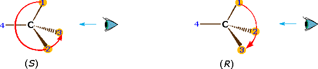
Remembering the geometric implication of wedge and hatched bonds, an observer (the eye) notes whether a curved arrow drawn from the # 1 position to the # 2 location and then to the # 3 position turns in a clockwise or counter-clockwise manner. If the turn is clockwise, as in the example on the right, the configuration is classified R. If it is counter-clockwise, as in the left illustration, the configuration is S. Another way of remembering the viewing rule, is to think of the asymmetric carbon as a steering wheel. The bond to the lowest priority group (# 4) is the steering column, and the other bonds are spokes on the wheel. If the wheel is turned from group # 1 toward group # 2, which in turn moves toward group # 3, this would either negotiate a right turn (R) or a left turn (S). This model is illustrated below for a right-handed turn, and the corresponding (R)-configurations of lactic acid and carvone are shown to its right. The stereogenic carbon atom is colored magenta in each case, and the sequence priorities are shown as light blue numbers. Note that if any two substituent groups on a stereogenic carbon are exchanged or switched, the configuration changes to its mirror image.
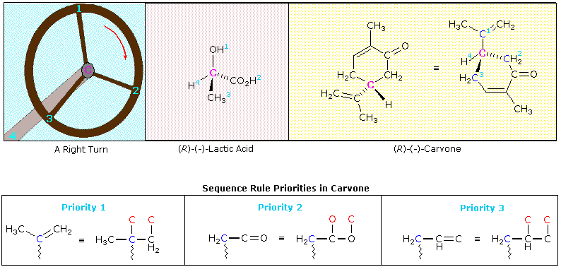
The sequence order of the substituent groups in lactic acid should be obvious, but the carvone example requires careful analysis. The hydrogen is clearly the lowest priority substituent, but the other three groups are all attached to the stereogenic carbon by bonds to carbon atoms (colored blue here). Two of the immediate substituent species are methylene groups (CH2), and the third is a doubly-bonded carbon. Rule # 3 of the sequence rules allows us to order these substituents. The carbon-carbon double bond is broken so as to give imaginary single-bonded carbon atoms (the phantom atoms are colored red in the equivalent structure). In this form the double bond assumes the priority of a 3º-alkyl group, which is greater than that of a methylene group. To establish the sequence priority of the two methylene substituents (both are part of the ring), we must move away from the chiral center until a point of difference is located. This occurs at the next carbon, which on one side is part of a carbonyl double bond (C=O), and on the other, part of a carbon-carbon double bond. Rule # 3 is again used to evaluate the two cases. The carbonyl group places two oxygens (one phantom) on the adjacent carbon atom, so this methylene side is ranked ahead of the other. An interesting feature of the two examples shown here is that the R-configuration in both cases is levorotatory (-) in its optical activity. The mirror-image S-configurations are, of course, dextrorotatory (+). It is important to remember that there is no simple or obvious relationship between the R or S designation of a molecular configuration and the experimentally measured specific rotation of the compound it represents. In order to determine the true or "absolute" configuration of an enantiomer, as in the cases of lactic acid and carvone reported here, it is necessary either to relate the compound to a known reference structure, or to conduct a rather complex X-ray analysis on a single crystal of the sample.
The configurations of lactic acid and carvone enantiomers may be examined as interactive models by .
A three-dimensional molecular structure will be displayed here, and may be moved about with the mouse. Carbon is gray, hydrogen is cyan, oxygen is red, and nitrogen is dark blue. Other atoms are colored differently and are labeled.Characterize the configuration of the molecule by selecting one of the three terms listed below. A response to your answer will be presented by clicking the Check Answer button.
Example 1 Example 2 Example 3 Example 4 Example 5 Example 6 Example 7 Example 8Example 9Example 10Example 11Example 12
Configurational drawings of chiral molecules sometimes display structures in a way that does not permit an easy application of the viewing rule. In the example of carvone, shown above, the initial formula directed the lowest priority substituent (H) toward the viewer, requiring either a reorientation display or a very good sense of three-dimensional structure on the part of the reader. The Fischer projection formulas, described later, are another example of displays that challenge even experienced students. A useful mnemonic, suggested by Professor Michael Rathke, is illustrated below. Here a stereogenic tetrahedral carbon has four different substituents, designated 1, 2, 3 & 4. If we assume that these numbers represent the sequence priority of these substituents (1 > 2 > 3 > 4), then the R and S configurations are defined.
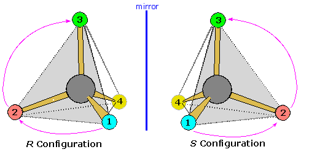
The viewing rule states that when the lowest priority substituent (4) is oriented behind the triangular face defined by the three higher priority substituents (shaded light gray here), a clockwise sequential arrangement of these substituents (1, 2 & 3) is defined as R, and a counter-clockwise sequence as S. Now a tetrahedral structure may be viewed from any of the four triangular faces, and the symmetry of the system is such that a correct R/S assignment is made if the remote out-of plane group has an even number sequence priority (2 or 4), whereas the wrong assignment results when the out-of plane group has an odd priority (1 or 3). Once one recognizes this relationship, the viewing options are increased and a configurational assignment is more easily achieved. For an example, click on the diagram to see the 1:3:4-face, shaded light gray. oriented in front of substituent 2. Note that the R/S assignment is unchanged.
The Chinese shrub Ma Huang (Ephedra vulgaris) contains two physiologically active compounds ephedrine and pseudoephedrine. Both compounds are stereoisomers of 2-methylamino-1-phenyl-1-propanol, and both are optically active, one being levorotatory and the other dextrorotatory. Since the properties of these compounds (see below) are significantly different, they cannot be enantiomers. How, then, are we to classify these isomers and others like them?
Since these two compounds are optically active, each must have an enantiomer. Although these missing stereoisomers were not present in the natural source, they have been prepared synthetically and have the expected identical physical properties and opposite-sign specific rotations with those listed above. The structural formula of 2-methylamino-1-phenylpropanol has two stereogenic carbons (#1 & #2). Each may assume an R or S configuration, so there are four stereoisomeric combinations possible. These are shown in the following illustration, together with the assignments that have been made on the basis of chemical interconversions.
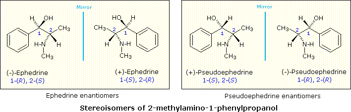
As a general rule, a structure having n chiral centers will have 2n possible combinations of these centers. Depending on the overall symmetry of the molecular structure, some of these combinations may be identical, but in the absence of such identity, we would expect to find 2n stereoisomers. Some of these stereoisomers will have enantiomeric relationships, but enantiomers come in pairs, and non-enantiomeric stereoisomers will therefore be common. We refer to such stereoisomers as diastereomers. In the example above, either of the ephedrine enantiomers has a diastereomeric relationship with either of the pseudoephedrine enantiomers.
For an interesting example illustrating the distinction between a chiral center and an asymmetric carbon Click Here.
The configurations of ephedrine and pseudoephedrine enantiomers may be examined as interactive models by .
A close examination of the ephedrine and pseudoephedrine isomers suggests that another stereogenic center, the nitrogen, is present. As noted earlier, single-bonded nitrogen is pyramidal in shape, with the non-bonding electron pair pointing to the unoccupied corner of a tetrahedral region. Since the nitrogen in these compounds is bonded to three different groups, its configuration is chiral. The non-identical mirror-image configurations are illustrated in the following diagram (the remainder of the molecule is represented by R, and the electron pair is colored yellow). If these configurations were stable, there would be four additional stereoisomers of ephedrine and pseudoephedrine. However, pyramidal nitrogen is normally not configurationally stable. It rapidly inverts its configuration (equilibrium arrows) by passing through a planar, sp2-hybridized transition state, leading to a mixture of interconverting R and S configurations. If the nitrogen atom were the only chiral center in the molecule, a 50:50 (racemic) mixture of R and S configurations would exist at equilibrium. If other chiral centers are present, as in the ephedrin isomers, a mixture of diastereomers will result. In any event, nitrogen groups such as this, if present in a compound, do not contribute to isolable stereoisomers.
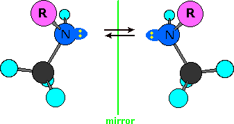
The inversion of pyramidal nitrogen in ammonia may be examined by .
The problem of drawing three-dimensional configurations on a two-dimensional surface, such as a piece of paper, has been a long-standing concern of chemists. The wedge and hatched line notations we have been using are effective, but can be troublesome when applied to compounds having many chiral centers. As part of his Nobel Prize-winning research on carbohydrates, the great German chemist Emil Fischer, devised a simple notation that is still widely used. In a Fischer projection drawing, the four bonds to a chiral carbon make a cross with the carbon atom at the intersection of the horizontal and vertical lines. The two horizontal bonds are directed toward the viewer (forward of the stereogenic carbon). The two vertical bonds are directed behind the central carbon (away from the viewer). Since this is not the usual way in which we have viewed such structures, the following diagram shows how a stereogenic carbon positioned in the common two-bonds-in-a-plane orientation ( x–C–y define the reference plane ) is rotated into the Fischer projection orientation (the far right formula). When writing Fischer projection formulas it is important to remember these conventions. Since the vertical bonds extend away from the viewer and the horizontal bonds toward the viewer, a Fischer structure may only be turned by 180º within the plane, thus maintaining this relationship. The structure must not be flipped over or rotated by 90º.
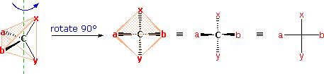
A model of the preceding diagram may be examined by .
In the above diagram, if x = CO2H, y = CH3, a = H & b = OH, the resulting formula describes (R)-(–)-lactic acid. The mirror-image formula, where x = CO2H, y = CH3, a = OH & b = H, would, of course, represent (S)-(+)-lactic acid.
Using the Fischer projection notation, the stereoisomers of 2-methylamino-1-phenylpropanol are drawn in the following manner. Note that it is customary to set the longest carbon chain as the vertical bond assembly.
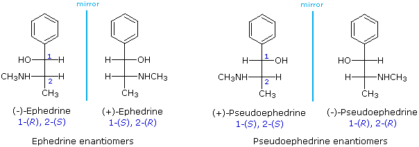
The usefulness of this notation to Fischer, in his carbohydrate studies, is evident in the following diagram. There are eight stereoisomers of 2,3,4,5-tetrahydroxypentanal, a group of compounds referred to as the aldopentoses. Since there are three chiral centers in this constitution, we should expect a maximum of 23 stereoisomers. These eight stereoisomers consist of four sets of enantiomers. If the configuration at C-4 is kept constant (R in the examples shown here), the four stereoisomers that result will be diastereomers. Fischer formulas for these isomers, which Fischer designated as the "D"-family, are shown in the diagram. Each of these compounds has an enantiomer, which is a member of the "L"-family so, as expected, there are eight stereoisomers in all. Determining whether a chiral carbon is R or S may seem difficult when using Fischer projections, but it is actually quite simple. If the lowest priority group (often a hydrogen) is on a vertical bond, the configuration is given directly from the relative positions of the three higher-ranked substituents. If the lowest priority group is on a horizontal bond, the positions of the remaining groups give the wrong answer (you are in looking at the configuration from the wrong side), so you simply reverse it.
The aldopentose structures drawn above are all diastereomers. A more selective term, epimer, is used to designate diastereomers that differ in configuration at only one chiral center. Thus, ribose and arabinose are epimers at C-2, and arabinose and lyxose are epimers at C-3. However, arabinose and xylose are not epimers, since their configurations differ at both C-2 and C-3.
The chiral centers in the preceding examples have all been different, one from another. In the case of 2,3-dihydroxybutanedioic acid, known as tartaric acid, the two chiral centers have the same four substituents and are equivalent. As a result, two of the four possible stereoisomers of this compound are identical due to a plane of symmetry, so there are only three stereoisomeric tartaric acids. Two of these stereoisomers are enantiomers and the third is an achiral diastereomer, called a meso compound. Meso compounds are achiral (optically inactive) diastereomers of chiral stereoisomers. Investigations of isomeric tartaric acid salts, carried out by Louis Pasteur in the mid 19th century, were instrumental in elucidating some of the subtleties of stereochemistry. Some physical properties of the isomers of tartaric acid are given in the following table.
Fischer projection formulas provide a helpful view of the configurational relationships within the structures of these isomers. In the following illustration a mirror line is drawn between formulas that have a mirror-image relationship. In demonstrating the identity of the two meso-compound formulas, remember that a Fischer projection formula may be rotated 180º in the plane.
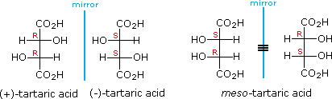
A model of meso-tartaric acid may be examined by
An additional example, consisting of two meso compounds, may be examined by
Fischer projection formulas are particularly useful for comparing configurational isomers within a family of related chiral compounds, such as the carbohydrates. However, the eclipsed conformations implied by these representations are unrealistic. When describing acyclic compounds incorporating two or more chiral centers, many chemists prefer to write zig-zag line formulas for the primary carbon chain. Here, the zig-zag carbon chain lies in a plane and the absolute or relative configurations at the chiral centers are then designated by wedge or hatched bonds to substituent groups. This is illustrated for D-(-)-ribose and the diastereoisomeric D-tetroses erythrose and threose in the following diagram.
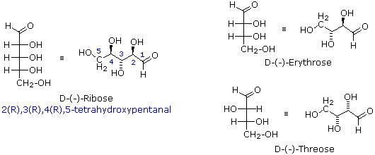
These compounds are all chiral and only one enantiomer is drawn (the D-family member). Many times, however, we must refer to and name diastereoisomers that are racemic or achiral. For example, addition of chlorine to cis-2-butene yields a stereoisomer of 2,3-dichlorobutane different from the one obtained by chlorine addition to trans-2-butene. In cases having two adjacent chiral centers, such as this, the prefixes erythro and threo may be used to designate the relative configuration of the centers. These prefixes, taken from the names of the tetroses erythrose and threose (above), may be applied to racemic compounds, as well as pure enantiomers and meso compounds, as shown in the following diagram. In the commonly used zig-zag drawings substituents may lie on the same side of the carbon chain, a syn orientation, or on opposite sides, an anti orientation. For adjacent (vicinal) substituents this is opposite to their location in a Fischer formula. Thus, the substituents in the erythro isomer have an anti orientation, but are syn in the threo isomer.
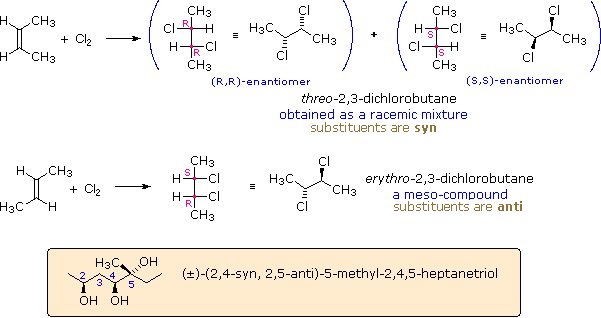
The syn-anti nomenclature may be applied to acyclic compounds having more than two chiral centers, as illustrated by the example in the colored box. The stereogenic center nearest carbon #1 serves as a reference. At sites having two substituents, such as carbon #5, the terms refer to the relative orientation of the highest order substituent, as determined by the C.I.P. sequence rules.
As noted earlier, chiral compounds synthesized from achiral starting materials and reagents are generally racemic (i.e. a 50:50 mixture of enantiomers). Separation of racemates into their component enantiomers is a process called resolution. Since enantiomers have identical physical properties, such as solubility and melting point, resolution is extremely difficult. Diastereomers, on the other hand, have different physical properties, and this fact is used to achieve resolution of racemates. Reaction of a racemate with an enantiomerically pure chiral reagent gives a mixture of diastereomers, which can be separated. Reversing the first reaction then leads to the separated enantiomers plus the recovered reagent.
Many kinds of chemical and physical reactions, including salt formation, may be used to achieve the diastereomeric intermediates needed for separation. The following diagram illustrates this general principle by showing how a nut having a right-handed thread (R) could serve as a "reagent" to discriminate and separate a mixture of right- and left-handed bolts of identical size and weight. Only the two right-handed partners can interact to give a fully-threaded intermediate, so separation is fairly simple. The resolving moiety, i.e. the nut, is then removed, leaving the bolts separated into their right and left-handed forms. Chemical reactions of enantiomers are normally not so dramatically different, but a practical distinction is nevertheless possible.
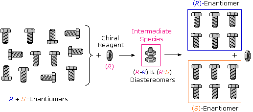
The Fischer projection formula of meso-tartaric acid has a plane of symmetry bisecting the C2–C3 bond, as shown on the left in the diagram below, so this structure is clearly achiral. The eclipsed orientation of bonds that is assumed in the Fischer drawing is, however, an unstable conformation, and we should examine the staggered conformers that undoubtedly make up most of the sample molecules. The four structures that are shown to the right of the Fischer projection consist of the achiral Fischer conformation (A) and three staggered conformers, all displayed in both sawhorse and Newman projections. The second and fourth conformations (B & D) are dissymmetric, and are in fact enantiomeric structures. The third conformer (C) has a center of symmetry and is achiral.
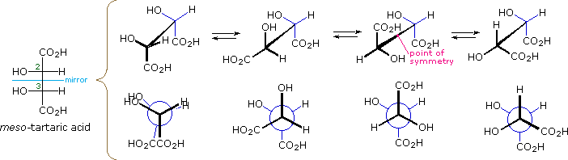
Since a significant proportion of the meso-tartaric acid molecules in a sample will have chiral conformations, the achiral properties of the sample (e.g. optical inactivity) should not be attributed to the symmetry of the Fischer formula. Equilibria among the various conformations are rapidly established, and the proportion of each conformer present at equilibrium depends on its relative potential energy (the most stable conformers predominate). Since enantiomers have equal potential energies, they will be present in equal concentration, thus canceling their macroscopic optical activity and other chiral behavior. Simply put, any chiral species that are present are racemic.
It is interesting to note that chiral conformations are present in most conformationally mobile compounds, even in the absence of any chiral centers. The gauche conformers of butane, for example, are chiral and are present in equal concentration in any sample of this hydrocarbon. The following illustration shows the enantiomeric relationship of these conformers, which are an example of a chiral axis rather than a chiral center.
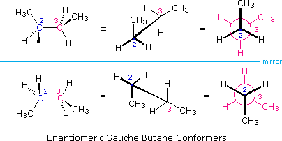
Another class of compounds that display conformational enantiomorphism are the substituted biphenyls. As shown in the following diagram, biphenyl itself is not planar, one benzene ring being slightly twisted or canted in relation to the other as a consequence of steric crowding. This crowding will be demonstrated by clicking on the diagram. The resulting chiral conformation, having a dihedral angle of about 45º, equilibrates rapidly with its enantiomer by rotation about the connecting single bond. Note that a conformation having a 90º dihedral angle is achiral, as a consequence of a plane of symmetry.
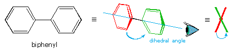
If each of the phenyl rings of a biphenyl has two different ortho or meta substituents (one may be hydrogen), even the twisted 90º dihedral angle conformer becomes chiral. In order to interconvert such conformers with their mirror image structures, a rotation through the higher energy coplanar form must be made. The ease with which this interconversion occurs will depend on the size of the ortho substituents, since these groups must slide past each other. The 2,2'-dicarboxylic acid on the left below cannot be resolved at room temperature, since thermal (kinetic) energy is sufficient to provide the necessary activation energy for racemization. The two additionally substituted diacids to its right have a higher activation energy for racemization, and can be resolved if care is taken to avoid heating them. As a rule, an activation energy barrier of 16 to 19 kcal/mole is required to prevent spontaneous room temperature racemization of substituted biphenyls. Since fluorine is smaller than a nitro group, the center compound racemizes more rapidly on heating than does the nitro compound to its right. Conformational isomers that are isolable due to high energy barriers are called atropisomers.
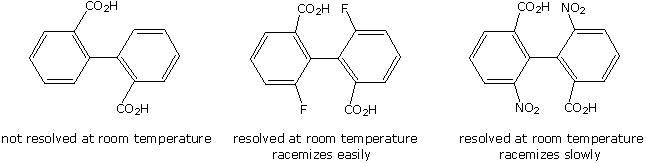
By clicking on the diagram, three additional examples of resolvable biphenyls will be displayed. The 2,2'-disulfonic acid (compound A) can be resolved with care, confirming the larger size of SO3H compared with CO2H. Compounds B and C provide additional insight into the racemization of biphenyls. Although these biphenyls have identical ortho substituents, the meta nitro substituent adjacent to the methoxyl group in C exerts a buttressing influence that increases the effective size of that ortho substituent. Finally, by clicking on the diagram a second time two additional examples of substituted biphenyls will be shown. The left hand compound is held in a twisted conformation by the bridging carbon chain. Racemization requires passing through a planar configuration, and the increased angle and eclipsing strain in this structure contribute to a large activation energy. Consequently, this compound is easily resolved into enantiomeric stereoisomers. The right hand compound is heavily ortho-substituted and most certainly resists assuming a planar configuration. However, the right benzene ring has two identical ortho substituents, so the stable 90º dihedral angle conformer has a plane of symmetry. All chiral twisted conformers are present as racemates, so this compound cannot be resolved.
To see models of biphenyl and a chiral tetrasubstituted derivative .
The distinction between configurational stereoisomers and the conformers they may assume is well-illustrated by the disubstituted cyclohexanes. The following discussion uses the various isomers of dichlorocyclohexane as examples. The 1,1-dichloro isomer is omitted because it is an unexceptional constitutional isomer of the others, and has no centers of chirality (asymmetric carbon atoms). The 1,2- and 1,3-dichlorocyclohexanes each have two centers of chirality, bearing the same set of substituents. The cis & trans-1,4-dichlorocyclohexanes do not have any chiral centers, since the two ring groups on the substituted carbons are identical.
There are three configurational isomers of 1,2-dichlorocyclohexane and three configurational isomers of 1,3-dichlorocyclohexane. These are shown in the following table.
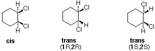
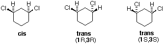
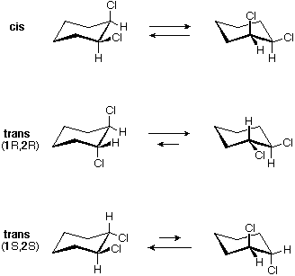
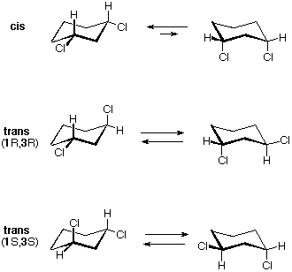
All the 1,2-dichloro isomers are constitutional isomers of the 1,3-dichloro isomers. In each category (1,2- & 1,3-), the (R,R)-trans isomer and the (S,S)-trans isomer are enantiomers. The cis isomer is a diastereomer of the trans isomers. Finally, all of these isomers may exist as a mixture of two (or more) conformational isomers, as shown in the table.
The chair conformer of the cis 1,2-dichloro isomer is chiral. It exists as a 50:50 mixture of enantiomeric conformations, which interconvert so rapidly they cannot be resolved (ie. separated). Since the cis isomer has two centers of chirality (asymmetric carbons) and is optically inactive, it is a meso-compound. The corresponding trans isomers also exist as rapidly interconverting chiral conformations. The diequatorial conformer predominates in each case, the (R,R) conformations being mirror images of the (S,S) conformations. All these conformations are diastereomeric with the cis conformations.
The diequatorial chair conformer of the cis 1,3-dichloro isomer is achiral. It is the major component of a fast equilibrium with the diaxial conformer, which is also achiral. This isomer is also a meso compound. The corresponding trans isomers also undergo a rapid conformational interconversion. For these isomers, however, this interconversion produces an identical conformer, so each enantiomer (R,R) and (S,S) has predominately a single chiral conformation. These enantiomeric conformations are diastereomeric with the cis conformations.
The 1,4-dichlorocyclohexanes may exist as cis or trans stereoisomers. Both are achiral, since the disubstituted six-membered ring has a plane of symmetry. These isomers are diastereomers of each other, and are constitutional isomers of the 1,2- and 1,3- isomers.
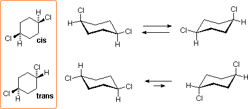
All the chair conformers of these isomers are achiral, and the diequatorial conformer of the trans isomer is the predominate species at equilibrium.
The first five problems ask you to identify equivalent groups of atoms, symmetry elements, stereogenic centers and the presence or absence of chirality. Part two of the fourth problem also requires the application of R/S nomenclature. The nomenclature terminology and classification of stereoisomers is examined in the next two problems, followed by a question concerning the relationship of isomeric pairs. Designation of CIP names is the subject of the next three problems. Products from stereoselective reactions are examined in the next problem, and a review of cyclohexane conformational terminology is the subject of the last two problems.
This page is the property of The Edvibe Team. Comments, questions and errors should be sent to contact@edvibe.co.ke. These pages are provided to the IOCD to assist in capacity building in chemical education. 05/05/2013